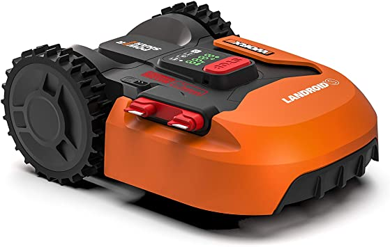

WORX WR130E S300
El WORX WR130E S300 es un cortacésped robótico diseñado para jardines pequeños de hasta 300 m². Con su avanzado sistema de navegación y corte, este cortacésped ofrece un rendimiento excepcional y un césped bien cuidado sin que tengas que hacer nada.
El diseño compacto y silencioso del WORX WR130E S300 lo convierte en una opción ideal para usuarios que buscan un cortacésped fácil de instalar y mantener. Con su tecnología AIA (Artificial Intelligence Algorithm), este cortacésped es capaz de trabajar de manera eficiente e inteligente, adaptándose a las necesidades de tu jardín.
No esperes más y adquiere tu WORX WR130E S300 para disfrutar de un jardín perfecto sin esfuerzo.
Compra ahora